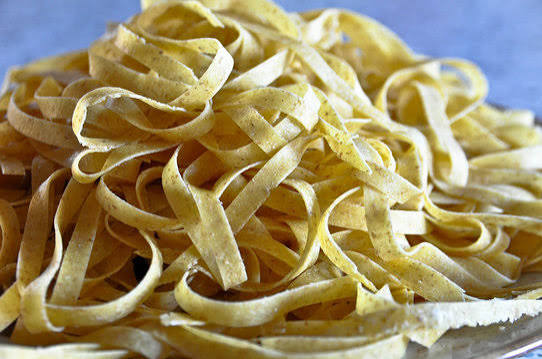

Accueil
Pâtes Fraiches Maison

Ingrédients
- - 1 tasse de farine tout usage
- - 1⁄2 cuillère à café de sel
- - 1 oeuf, battu
- - 2 cuillères à soupe d'eau (facultatif)
Étapes
- Rassemblez tous les ingrédients.
- Mélanger la farine et le sel dans un bol moyen. Faites un puits au centre et ajoutez des œufs battus. Bien mélanger jusqu'à ce qu'une pâte raide se forme, en ajoutant jusqu'à 2 cuillères à soupe d'eau si nécessaire.
- Pétrir la pâte sur une surface légèrement farinée jusqu’à ce qu’elle soit lisse, 3 à 4 minutes. Enveloppez la pâte et laissez reposer pendant 30 minutes à 1 heure.
- Rouler la pâte à la main ou avec une machine à pâtes à l'épaisseur souhaitée, puis couper en bandes de largeur et de longueur souhaitées.